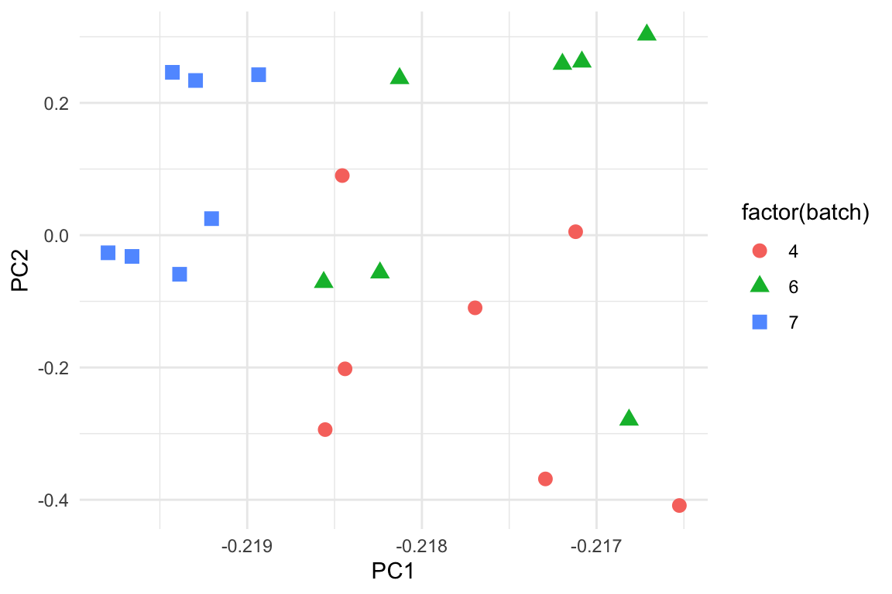

Chapter 11 Emner fra eksperimental design
library(tidyverse)
library(broom)11.1 Inledning og læringsmålene
11.1.1 Læringsmålene
I skal være i stand til at
- Beskrive randomimisation, replication and blocking
- Beskrive Simpson’s paradox
- Beskrive Anscombes quartet
- Tjekke efter batch effects med PCA
11.1.2 Inledning til chapter
Formålet med dette chapter er - hvordan kan vi anvende de værktøj som vi har lært i kurset til at kigge nærmere på forskellige emner i eksperimental design. Det er slet ikke en grundig introduktion til eksperimental design, men nogle nyttige og også interesseret emner som godt viser vigtigheden af at lave hensigsmæssige visualiseringer.
Forståelse af hvordan batch effekts påvirker en analyse er særligt vigtigt indenfor biologi, når mange store sekvensering projektor involverer data samlede eller sekvenseret over forskellige batches, sekvensering maskiner eller forskellige library forberelses metoder.
11.1.3 Video ressourcer
- Part 1: randomisation, replikation, blocking + confounding
- Læse notaterne nedenfor
- Part 2: Simpson’s paradox
Link her hvis det ikke virker nedenunder: https://player.vimeo.com/video/556581563
- Part 3: Anscombe’s quartet
Link her hvis det ikke virker nedenunder: https://player.vimeo.com/video/556581540
- Part 4: Batch effects and principal component analysis
Link her hvis det ikke virker nedenunder: https://player.vimeo.com/video/556581521
11.2 Baserende princip af eksperimental design
11.2.1 Randomisation and replication
Man laver et eksperiment for at få svar på et bestemt spørgsmål, eller hypotese. Og man designer eksperimentet ud fra princip som gøre det gyldigt at fortolke resultaterne fra analysen af de resulterende data. For et eksperiment at være gyldigt skal det kunne demonstrere hensigtsmæssige replikation og randomisation.
Randomisation
Resultaterne kan skyldes variabiliten i en faktor som ikke direkte er interessant i eksperimentet. Derfor bruger man randomisation til at få disse forskellige faktorer fordelte over de forskellige treatment grupper. Et eksempel kan være ‘double-blinding’ i kliniske eksperimenter - både lægen og patienten har ikke kenskab til, hvem der hører til de forskellige grupper, og så kan man undgår forskelsbehandling som kan påvirker resultaterne.
Replikation
Når man gentage eksperimentet flere gange - for eksempel ved at have flere patienter i hver treatment gruppe Det tillader os til at kunne beregne variabiliteten i de data, som er nødvendige for at konkludere om der er en forskel mellem de grupper. Man kan altså ikke generalisere resultater som er blevet målt på kun én person.

Figure 11.1: randomisation og replikation
I ovenstående figur er der 6 replikater i hver gruppe “treatment” eller “control.” I tilfældet “Good randomisation” er genstande som er taget ved tilfældet fra populationen vel matchet mellem de to grupper, mens i andet tilfældet “Poor randomisatin,” kan man se, at farverne af genstandene er vel matchet indenfor samme grupper. Det gøre det derfor umuligt at fortæl, om en eventuelle forskel mellem “treatment” og “control” er i virkeligheden resultatet af farven i stedet for målingerne, at man gerne vil sammenligne.
Confounding
Figuren nedenfor illustratorer age som counfounding variable i et eksperiment hvor man prøver at forstå sammenhæng mellem aktivitet niveau og vægtøgning. Der ser umiddelbart ud til at være, at lave aktivitet niveauer (dependent variable) forklarer vægtøgning (indenpendt variable) men man er nødt til at tage ændre variabler ind i betragtning for at sikre, at sammenhængen ikke skyldes noget andet. For eksempel, gruppen med de høj aktivitetsniveau kunne bestå af yngre mennesker end gruppen med de lav aktivitetsniveauet, og deres alder kan påvirker deres vægtøgning (måske på grund af forskelligeheder i stress niveauer, kost osv.).

Blocking
Man kan prøve at kontrollere for ekstra variabler som vi ikke er interesseret i gennem blocking. Man laver “blocking” ved først at identificere gruppe af individuelle som ligner hinanden så meget som muligt. Det kan være for eksempel at tre forskellige forsker var med til at lave et stor eksperiment med mange patienter og forskellige treatment grupper. Vi er interesseret i om der er forskelen mellem de treatment grupper, men ikke om der er en forskel mellem forskernes behandling af patienterne. Derfor vil vi gerne ‘block’ efter forsker - kontrollere for dem som en batch effect. Man kan også block efter fk. sex, for at sikre at forskellen i treatment grupper skyldes ikke forskelligheder mellem mænd og kvinder. Man laver “blocking” som del af en lineær model efter data er samlet, men det er nyttige at tænke over det fra starten.
11.2.2 Eksempel med datasættet ToothGrowth
Et god eksempel på en god eksperimental design er datasættet ToothGrowth, som er baserende på marsvin - de fik forskellige kosttilskud og doser og så fik målte deres tænder.
data(ToothGrowth)
ToothGrowth <- as_tibble(ToothGrowth)
ToothGrowth <- ToothGrowth %>% mutate(dose = as.factor(dose))
summary(ToothGrowth)## len supp dose
## Min. : 4.20 OJ:30 0.5:20
## 1st Qu.:13.07 VC:30 1 :20
## Median :19.25 2 :20
## Mean :18.81
## 3rd Qu.:25.27
## Max. :33.90Her kan man se, at for hver grupper (efter supp og dose) er der 10 marsvin - vi har således replikation over de grupper, og hver supp (supplement) har hver af de tre dose. Hvis vi for eksempel ikke var interesseret i supp men kun dose, så kan man ‘block’ efter suppfor at afbøde forskelligheder i effekten af de to supplements i supp.
ToothGrowth %>% dplyr::count(supp,dose) %>%
ggplot(aes(x=factor(dose),y=n,fill=factor(dose))) +
geom_bar(stat="identity") +
ylab("Number of guinea pigs") +
xlab("Dosage") +
facet_grid(~supp) +
theme_bw()Man må dog passe på, fordi vi vide ikke om, hvordan de marsvin blev tilknyttet til de forskellige grupper. For eksempel, hvis male og female marsvin er ikke tilknyttet ved tilfælde, kan det opstå, at supp “OJ” og dose “0.5” har kun male guinea pigs og supp “OJ” med dose “1.0” har kun female guninea pigs. Så kunne vi ikke fortæl, om forskellen i dose “0.5” vs “1.0” er resultatet af de dose eller kønnet.
11.3 Case studies: Simpson’s paradox
(Se også videoressourcer Part 2).
Simpson’s paradox opstå når man drager to modsætte konklusioner fra det samme datasæt - på den ene side når man kigger på de data samlede, og på den anden side når man tager nogle grupper i betragtning. Vi kan visualisere Simpson’s paradox gennem eksemplet nedenfor - her har vi to variabler x og y som vi kan avende til at lave et scatter plot, samt nogle forskellige grupper indenfor variablen group.
#library(datasauRus)
simpsons_paradox <- read.table("https://www.dropbox.com/s/ysh3qpc7qv0ceut/simpsons_paradox_groups.txt?dl=1",header=T)
simpsons_paradox <- simpsons_paradox %>% as_tibble(simpsons_paradox)
simpsons_paradoxFALSE # A tibble: 222 × 3
FALSE x y group
FALSE <dbl> <dbl> <chr>
FALSE 1 62.2 70.6 D
FALSE 2 52.3 14.7 B
FALSE 3 56.4 46.4 C
FALSE 4 66.8 66.2 D
FALSE 5 66.5 89.2 E
FALSE 6 62.4 91.5 E
FALSE 7 38.9 6.76 A
FALSE 8 39.4 63.1 C
FALSE 9 60.9 92.6 E
FALSE 10 56.6 45.8 C
FALSE # … with 212 more rowsHvis vi bare ignorere group og ser på de data samlet, kan vi se at der er en stærk positiv sammenhæng mellem x og y. Men når vi opdele efter de forskellige grupper, ved at skrive colour = group, få vi faktisk en negativ sammenhæng indenfor hver af de grupper.
p1 <- simpsons_paradox %>%
ggplot(aes(x,y)) +
geom_point() +
geom_smooth(method="lm",se=FALSE) +
theme_classic()
p2 <- simpsons_paradox %>%
ggplot(aes(x,y,colour=group)) +
geom_point() +
geom_smooth(method="lm",aes(group=group),colour="black",se=FALSE) +
theme_classic()
library(gridExtra)
grid.arrange(p1,p2,ncol=2)
Simpson’s paradoks sker mere ofte end man skulle tror, og derfor er det vigtigt at tænke over hvad for nogen ændre variabler man også er nødt til at tage i betragtning.
11.3.1 Berkerly admissions
Det meste berømte eksempel af Simpson’s Paradox drejer sig om optagelsen til universitetet i Berkely i 1973. Følgende table fra Wikipedia viser statistikker om antallet som ansøgt samt procenttallet som blev optaget overordnet i universitet efter kønnet.

Hvis vi lave et barplot af tallet, kan man se, at der er en højere procenttal af mænd end kvinder som blev optaget på universitet (som resulterede i en retsag mod universitet).
admissions_all <- tibble("sex"=c("all","men","woman"),admitted=c("41","44","35"))
admissions_all %>% ggplot(aes(x=sex,y=admitted,fill=sex)) +
geom_bar(stat="identity") +
theme_minimal() +
ylab("Percent admitted") +
scale_x_discrete(limits = c("woman","men","all")) +
coord_flip()
Da man dog kiggede lidt nærmere på de samme tal, men opdelt efter de forskellige afdelinger i universitet, fik man en anderledes billede af situationen. I følgende table har vi optagelses tallene for mænd og kvinder i hver af de forskellige afdelinger (A til F).
admissions_separate <- tribble(
~department, ~all, ~men, ~women,
#------------|-------|-------|--------#
"A", 64, 62, 82,
"B", 63, 63, 68,
"C", 35, 37, 34,
"D", 34, 33, 35,
"E", 25, 28, 24,
"F", 6, 6, 7
)Man kan man se, at for de fleste af de afdelinger, er der ikke en signifikant forskel mellem mænd og kvinder, og i nogen tilfælde havde kvinder faktisk en større chance for at blive optaget.
admissions_separate %>%
pivot_longer(-department,names_to="sex",values_to="admitted") %>%
ggplot(aes(x=department,y=admitted,fill=sex)) +
ylab("Percent admitted") +
geom_bar(stat="identity",position = "dodge",colour="black") +
theme_minimal()
Hvad skyldes det her? Det viste sig, at kvinder havde en tendens til, at ansøge indenfor de afdelinger, som var sværeste at komme ind i. For eksempel, kan man se her, at department E har en relativt lav optagelses procent. Den samme afdelinger var dog en af dem, hvor langt flere kvinder ansøgt end mænd.
applications_E <- tibble("sex"=c("all","men","woman"),applications=c("584","191","393"))
applications_E %>% ggplot(aes(x=sex,y=applications,fill=sex)) +
geom_bar(stat="identity") +
theme_minimal() +
ylab("Number of applications to dep. E") +
scale_x_discrete(limits = c("woman","men","all")) +
coord_flip()
11.4 Case studies: Anscombe’s quartet
(Se også videoressourcer Part 3).
Anscombes quartet (ser også https://en.wikipedia.org/wiki/Anscombe%27s_quartet) er en meget nyttige og berømt eksempel som stammer fra 1973, og som forklarer vigitigheden af at få lavet en visualisering af datasættet. Vi kan få åbnet de data fra linket nedenfor - man har x værdier og y værdier som kan anvendes til at lave et scatter plot, og der er også set, det refererer til fire forskellige datasæt (derfor ‘quartet’).
anscombe <- read.table("https://www.dropbox.com/s/mlt7crdik3eih9a/anscombe_long_format.txt?dl=1",header=T)
anscombe <- as_tibble(anscombe)
anscombe## # A tibble: 44 × 3
## set x y
## <int> <int> <dbl>
## 1 1 10 8.04
## 2 1 8 6.95
## 3 1 13 7.58
## 4 1 9 8.81
## 5 1 11 8.33
## 6 1 14 9.96
## 7 1 6 7.24
## 8 1 4 4.26
## 9 1 12 10.8
## 10 1 7 4.82
## # … with 34 more rowsFormålet med de data er, at man gerne vil fitte en lineær regression model for at finde den forventet y afhængig om x (husk lm(y ~ x)). Da vi har fire datasæt, kan man således opdele de data efter set og benytter rammen nest og map (se Chapter 7) til at fitte de fire lineær regression modeller. Vi anvender også tidy og glance for at få summary statistikker fra de fire modeller:
my_func <- ~lm(y ~ x, data = .x)
tidy_anscombe_models <- anscombe %>%
group_nest(set) %>%
mutate(fit = map(data, my_func),
tidy = map(fit, tidy),
glance = map(fit, glance))Man kan anvende unnest på den output fra tidy og kigge på den intercept og den slope af de fire modeller. Man kan se, at de to parametre er næsten identiske for de fire modeller:
tidy_anscombe_models %>% unnest("tidy") %>%
pivot_wider(id_cols = "set",names_from = "term",values_from="estimate") ## # A tibble: 4 × 3
## set `(Intercept)` x
## <int> <dbl> <dbl>
## 1 1 3.00 0.500
## 2 2 3.00 0.5
## 3 3 3.00 0.500
## 4 4 3.00 0.500Hvad med de andre parametre fra modellen - lad os kigge for eksempel på r.squared og p.value fra modellerne, som kan findes i output fra glance. Her kan vi igen se, at de er næsten identiske.
tidy_anscombe_models %>%
unnest(cols = c(glance)) %>%
select(set, r.squared,p.value)## # A tibble: 4 × 3
## set r.squared p.value
## <int> <dbl> <dbl>
## 1 1 0.667 0.00217
## 2 2 0.666 0.00218
## 3 3 0.666 0.00218
## 4 4 0.667 0.00216Hvad med korrelation? Også næsten den samme:
my_func <- ~cor(.x$x,.x$y)
anscombe %>%
group_nest(set) %>%
mutate(cor = map(data, my_func)) %>%
unnest(cor) %>%
select(-data)## # A tibble: 4 × 2
## set cor
## <int> <dbl>
## 1 1 0.816
## 2 2 0.816
## 3 3 0.816
## 4 4 0.817Kan man så konkludere, at de fire datasæt som underligger de forskellige modeller, er identiske? Vi laver et scatter plot af de fire datasæt (som vi faktisk skulle have gjort i starten af vores analyse).
anscombe %>%
ggplot(aes(x = x, y = y,colour=factor(set))) +
geom_point() +
facet_wrap(~set) +
geom_smooth(method = "lm", se = FALSE) +
theme_minimal()
De fire datasæt er meget forskellige. Vi ved, at de har alle samme den samme beste rette linjer, men de data er slet ikke den samme. Den første datasæt ser egnet til en lineær regression analyse men vi kan se i nummer to at der ikke engang er en linæer sammenhæng. Og de andre to har en outlier værdi, som gøre at den bedste rette linje passer ikke særlig god til de data.
11.5 Using PCA to find batch effects
(Se også videoressourcer Part 4).
Man kan også anvende visualisering til at kigge lidt nærmere på eventuelle batch effekter i de data. Det er især vigtige i store eksperimenter, hvor dele af de data var samlet på forskellige tidspunkter, lokationer, eller af forskellige personer. Det er ofte tilfældet i sekvensering-basarede datasæt, at man ser batch effects, og det kan skyldes mange ting, bla.:
- Sekvensering dybelse
- Grupper samples lavet på forskellige tidspunkter af forskellige indivduelle
- Sekvensering maskiner - samples sekvenserne på forskellige maskiner eller ‘lanes.’
Lad os tage udgangspunkt i nogle genekspression sekvensering data lavet i mus.
norm.cts <- read.table("https://www.dropbox.com/s/3vhwnsnhzsy35nd/bottomly_count_table_normalised.txt?dl=1")
coldata <- read.table("https://www.dropbox.com/s/el3sm9ncvzbq6xf/bottomly_phenodata.txt?dl=1")
coldata <- as_tibble(coldata)
norm.cts <- as_tibble(norm.cts,rownames="gene")
coldata <- as_tibble(coldata)Jeg begynder ved at vælge kun rækker som har mindst 50 counts, for at undgå gener med lave ekspressionsniveauer. Det næste jeg gør er at transformere de data til log form. Her benytter jeg map_df over alle de numeriske kolonner - et strategi er at gemme kolonnen gene, fjerne den fra de data, anvende map_df for at lave de transformering og så tilføj gene som en kolon igen bagefter (OBS: der er mere effektiv måder at gøre det på - for eksempel ved at anvende map_at, som I er velkommen til at undersøge).
#normalise and filter the data
norm.cts <- norm.cts %>%
filter(rowSums(norm.cts %>% select(-gene))>50)
genes <- norm.cts %>% pull(gene)
norm.cts <- norm.cts %>%
select(-gene) %>%
map_df(~log(.x+1)) %>%
mutate(gene=genes,.before=1)
norm.cts## # A tibble: 10,193 × 22
## gene SRX033480 SRX033488 SRX033481 SRX033489 SRX033482 SRX033490 SRX033483
## <chr> <dbl> <dbl> <dbl> <dbl> <dbl> <dbl> <dbl>
## 1 ENSMUS… 6.35 6.32 6.21 6.29 6.31 6.27 6.30
## 2 ENSMUS… 3.51 3.56 3.57 3.27 2.99 3.61 3.56
## 3 ENSMUS… 3.19 3.50 3.08 3.21 3.14 3.09 3.22
## 4 ENSMUS… 6.69 6.48 6.38 6.35 6.39 6.34 6.50
## 5 ENSMUS… 6.05 6.37 6.17 6.26 6.16 6.06 6.13
## 6 ENSMUS… 2.89 2.94 3.16 3.21 3.77 3.30 3.11
## 7 ENSMUS… 3.42 3.12 3.86 4.36 3.77 3.99 4.24
## 8 ENSMUS… 3.42 2.94 3.52 3.41 3.57 3.60 2.99
## 9 ENSMUS… 5.02 4.98 4.49 4.27 4.67 4.35 4.81
## 10 ENSMUS… 5.13 4.88 4.97 4.76 4.82 4.79 4.96
## # … with 10,183 more rows, and 14 more variables: SRX033476 <dbl>,
## # SRX033478 <dbl>, SRX033479 <dbl>, SRX033472 <dbl>, SRX033473 <dbl>,
## # SRX033474 <dbl>, SRX033475 <dbl>, SRX033491 <dbl>, SRX033484 <dbl>,
## # SRX033492 <dbl>, SRX033485 <dbl>, SRX033493 <dbl>, SRX033486 <dbl>,
## # SRX033494 <dbl>Så der er omkring 10,000 genes i rækkerne og så 21 forskellige samples som spreder sig over kolonnerne. Vi har også nogle sample oplysninger - der er to foskellige strains af mus og også forskellige batches.
coldata## # A tibble: 21 × 5
## column num.tech.reps strain batch lane.number
## <chr> <int> <chr> <int> <int>
## 1 SRX033480 1 C57BL.6J 6 1
## 2 SRX033488 1 C57BL.6J 7 1
## 3 SRX033481 1 C57BL.6J 6 2
## 4 SRX033489 1 C57BL.6J 7 2
## 5 SRX033482 1 C57BL.6J 6 3
## 6 SRX033490 1 C57BL.6J 7 3
## 7 SRX033483 1 C57BL.6J 6 5
## 8 SRX033476 1 C57BL.6J 4 6
## 9 SRX033478 1 C57BL.6J 4 7
## 10 SRX033479 1 C57BL.6J 4 8
## # … with 11 more rowsVi kan kigger på hvor mange af hver stain og batch vi har i de data:
table(coldata$strain, coldata$batch)##
## 4 6 7
## C57BL.6J 3 4 3
## DBA.2J 4 3 4Så kan man se, at både strain har repræsenteret tre eller fire samples i hver af de tre batches. Der er derfor replication og da vi har fået repræsenteret hver kombination af strain og batch, kan man eventuaelle block efter batch for at få fjernet dens effekt. Her vil vi bare gerne kigger efter batch effekts og ikke fjerner dem.
For at kigger på de batch effekts kan man via prinicpal component analysis. Husk at når man lave en principal compononent analysis, få men hvad der kaldes for den rotation matrix - det anvendes til at se hvor de forskellige samples ligger relative til hinhanden i de forskellige principal components - samples der ligner hinanden vises på samme sted på plottet.
pca_fit <- norm.cts %>%
select(where(is.numeric)) %>% # retain only numeric columns
prcomp(scale = TRUE) # do PCA on scaled dataFor at analysere sammenhænge mellem de forskellige variabler kan man kigger på den rotation matrix med funktionen tidy:
rot_matrix <- pca_fit %>%
tidy(matrix = "rotation") Vi vil gerne lave et plot af de rotation matrix, men første vil vi gerne tilføje de sample oplysninger med left_join, så at vi kan se de forskellige batches eller strains. Både datarammer har en kolon som hedder column som referer til de sample navne, så jeg forbinde efter column her.
rot_matrix <- rot_matrix %>%
left_join(coldata,by="column")Anvende pivot_wider til at få den i wide form:
rot_matrix_wide <- rot_matrix %>%
pivot_wider(names_from = "PC", names_prefix = "PC", values_from = "value")
rot_matrix_wide## # A tibble: 21 × 26
## column num.tech.reps strain batch lane.number PC1 PC2 PC3 PC4
## <chr> <int> <chr> <int> <int> <dbl> <dbl> <dbl> <dbl>
## 1 SRX03… 1 C57BL… 6 1 -0.217 0.262 0.0200 -0.508
## 2 SRX03… 1 C57BL… 7 1 -0.219 0.243 0.00586 0.166
## 3 SRX03… 1 C57BL… 6 2 -0.217 0.303 0.0153 -0.237
## 4 SRX03… 1 C57BL… 7 2 -0.219 0.246 0.00799 0.178
## 5 SRX03… 1 C57BL… 6 3 -0.217 0.259 0.0974 -0.113
## 6 SRX03… 1 C57BL… 7 3 -0.219 0.234 0.00385 0.209
## 7 SRX03… 1 C57BL… 6 5 -0.218 0.237 0.0303 -0.179
## 8 SRX03… 1 C57BL… 4 6 -0.217 0.00524 0.463 0.376
## 9 SRX03… 1 C57BL… 4 7 -0.218 0.0901 0.305 0.0651
## 10 SRX03… 1 C57BL… 4 8 -0.218 -0.110 0.434 -0.161
## # … with 11 more rows, and 17 more variables: PC5 <dbl>, PC6 <dbl>, PC7 <dbl>,
## # PC8 <dbl>, PC9 <dbl>, PC10 <dbl>, PC11 <dbl>, PC12 <dbl>, PC13 <dbl>,
## # PC14 <dbl>, PC15 <dbl>, PC16 <dbl>, PC17 <dbl>, PC18 <dbl>, PC19 <dbl>,
## # PC20 <dbl>, PC21 <dbl>Vi laver et plot af de første to principal components og giv farve og form efter de tre batches i de samples. Vi kan se, at vi har fået alle samples fra batch nummer 2 på samme sted i plottet.
rot_matrix_wide %>%
ggplot(aes(PC1,PC2,shape=factor(batch),colour=factor(batch))) +
geom_point(size=3) +
theme_minimal()
Vi kan også give farver efter strain, hvor vi kan se at der nok er en forskellen mellem de to strains her.
rot_matrix_wide %>%
ggplot(aes(PC1,PC2,shape=factor(strain),colour=factor(strain))) +
geom_point(size=3) +
theme_minimal()
Man kan også ser de data på en anden måde ved at lave boxplots for to første to principal comonponets opdelte efter batch. Vi få bekræftet vores observation at der er en stærk forskel mellem match 7 og de andre to batches langt den første principal component, og det er et problem som muligvis skal korrigeres før man laver yderligere analyser på de data.
p1 <- rot_matrix_wide %>%
ggplot(aes(x=factor(batch),y=PC1,fill=factor(batch))) + geom_boxplot(show.legend = F) + geom_jitter(show.legend = F) + theme_minimal()
p2 <- rot_matrix_wide %>%
ggplot(aes(x=factor(batch),y=PC2,fill=factor(batch))) + geom_boxplot(show.legend = F) + geom_jitter(show.legend = F) + theme_minimal()
library(gridExtra)
grid.arrange(p1,p2,ncol=2)
Nogle ide for hvordan man korrigere batch effekts (men ikke dækket i kurset): https://en.wikipedia.org/wiki/Batch_effect#Correction
11.6 Problemstillinger
0) Quiz på Absalon - experimental
1) Eksperimental design
Jeg laver et eksperiment hvor patienter få en af tre forskellige kosttilskud. Der er 5 patienter i hver gruppe og jeg vil gerne se, om patienters energi niveau i gennemsnit er forskellige mellem de tre grupper. Alderne af de patienter i hver af de tre grupper er:
Gruppe 1: 18, 23, 31, 25, 19
Gruppe 2: 24, 29, 35, 21, 30
Gruppe 3: 43, 52, 33, 39, 40
- Hvad er problemet her med det eksperimental design? Lav boxplots for at viser fordelingen af de alders for hver af de tre grupper.
- Hvis man finder en signifikant forskel mellem de tre kosttilskud, kan man stoler på resultaterne?
- Hvad andre variabler end alder kunne skyldes en eventuelle forskel mellem de tre kosttilskud, og som måske skulle tages i betragtning?
- Hvad kan man gøre med den eksperiment design for at løse problemet?
2) Simpson’s paradoks Lung Cap data revisited
Indlæse LungCapData:
LungCapData <- read.csv("https://www.dropbox.com/s/ke27fs5d37ks1hm/LungCapData.csv?dl=1")
LungCapData$Age.Group <- cut(LungCapData$Age,breaks=c(1,13,15,17,19),right=FALSE,include.lowest = TRUE)
levels(LungCapData$Age.Group) <- c("<13","13-14","15-16","17+")- Lav boxplots med
smokepå x-aksen ogLungCappå y-aksen.- Notere hvilke gruppe den højeste lungkapacitet.
- Lav samme plot men adskilte efter
Age.Group. - Beskriv, hvordan det er et eksempel på Simpson’s Paradoks.
- Lav et boxplot med
Agepå y-aksen ogSmokepå x-aksen for at støtte hvorfor man ser Simpson’s Paradoks i de data.
3) Anscombes analyse Gentage Anscombes analyse med dinosaurus datasæt:
library(datasauRus)
data_dozen <- datasauRus::datasaurus_dozenFit en lineær regression model for hver af de datasæt (anvende
group_by,nestogmapramme), hvor man finde den forventetyafhængig omx.Anvende
tidyogglancepå resultaterne.Anvende resultaterne fra
tidytil at kigge på den slope og intercept for de forskellige modeller.Anvende også resultaterne fra
glancetil at kigge på denr.squaredværdi og p-værdien.Er de de samme datasæt? Lave et scatter plot adskilte efter de forskellige datasæt.
- Hvordan ser de bedste rette linjer ud på de plots?
4) Vi vil gerne tjekke for batch effects i følgende datasæt. Det er simuleret “single cell” sekvensering count data cse50 samt med batches som angiver en batch for hver af de 500 cells i de datasæt.
cse50 <- read.table("https://www.dropbox.com/s/o0wzojpcsekeg6z/cell_mix_50_counts.txt?dl=1")
batches <- read.table("https://www.dropbox.com/s/4t382bfgro46ka5/cell_mix_50_batches.txt?dl=1")
batches <- as_tibble(batches)
cse50 <- as_tibble(cse50)a) Anvend
map_dftil at få transformeret de data til log scale (plus 1 først og tag log bagefter).b) Lav PCA på dent transformeret datasæt.
c) Anvend din PCA resultater til at få den rotation matrix
c) Forbinde oplysningerne fra datarammen
batchesmedleft_jointil din rotation matrix.- Først tilføj en ny kolon der hedder “column,” som er lig med
names(cse50).
- Først tilføj en ny kolon der hedder “column,” som er lig med
d) Anvend
pivot_widerog lave et plot af den første to principal components, og angive farve efterbatch.e) Lav også boxplots for de første to prinpical components fordelt efter
batch.- Kommentere på eventuelle batch effekts i de data.